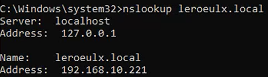
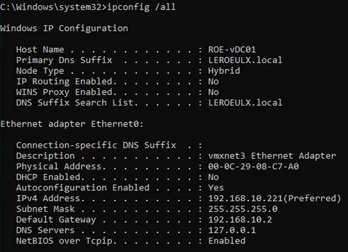

Tutorial – Active Directory Health Check
This check verifies that DNS resolution is working correctly in the Active Directory environment.
Open Command Prompt and run:
nslookup domain.local
Verify that:

Run:
ipconfig /all
Verify that:
